Start here
This project came out of a real failure. Last year the raised beds did not make it through our short cabin stretches the way we hoped. A few missed watering days was enough to knock things back hard, and it was frustrating to come home feeling like the garden had been punished for us leaving.
So this year we are trying a more forgiving setup. If you want less daily watering, there are 2 easy ways to do it. You can build a simple 1-pot olla, or a sealed 2-pot version that holds more water and stretches a little longer between refills.
The 1-pot version is the easiest beginner option. The 2-pot version takes a little more setup, but gives you a larger buried reservoir. Either way, the goal is the same: bury an unglazed terra cotta pot near your plants so moisture can slowly move into the soil where roots actually need it.
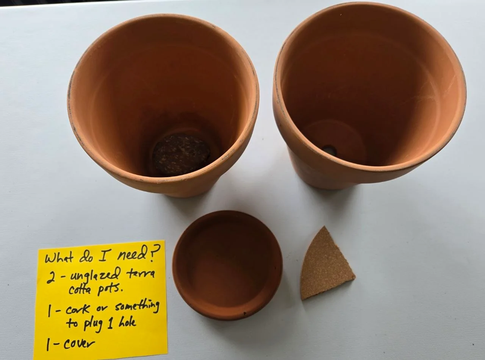
2 easy olla options

Option 1: Super simple 1-pot olla
This is the easiest version for beginners: one unglazed terra cotta pot with the bottom hole sealed, buried in the bed, filled with water, and covered.
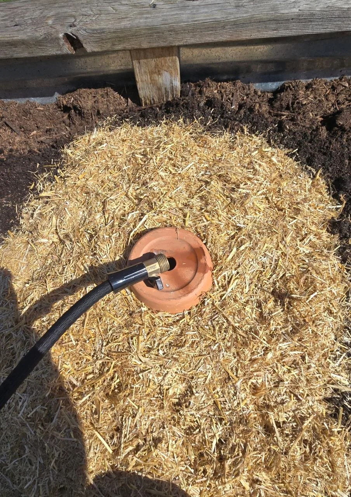
Option 2: 2-pot olla system
This version uses 2 matching pots sealed together to make a larger buried reservoir. It takes more setup, but can hold more water and help stretch out the time between refills.
Build the olla
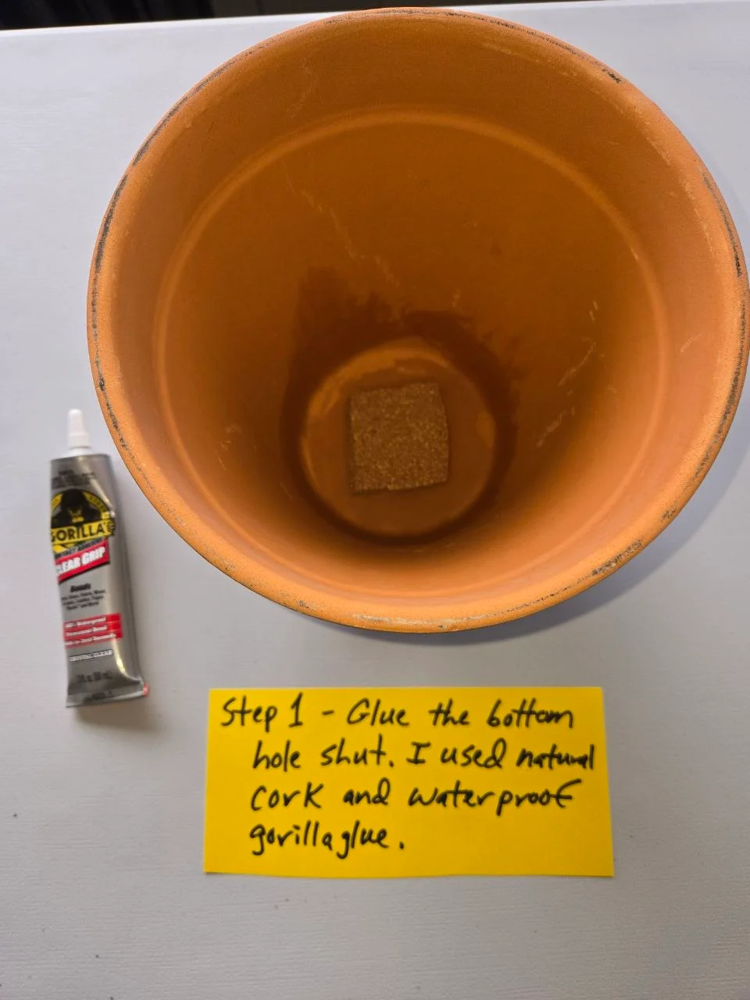
Seal the drain hole
Plug the drain hole in one of the pots.
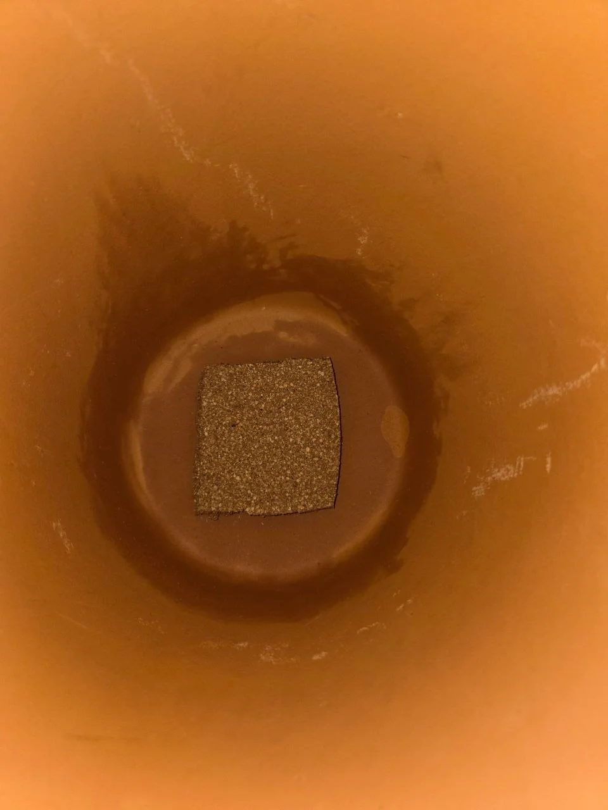
Check the seal
Make sure the hole is sealed well so water does not run straight out of the bottom.
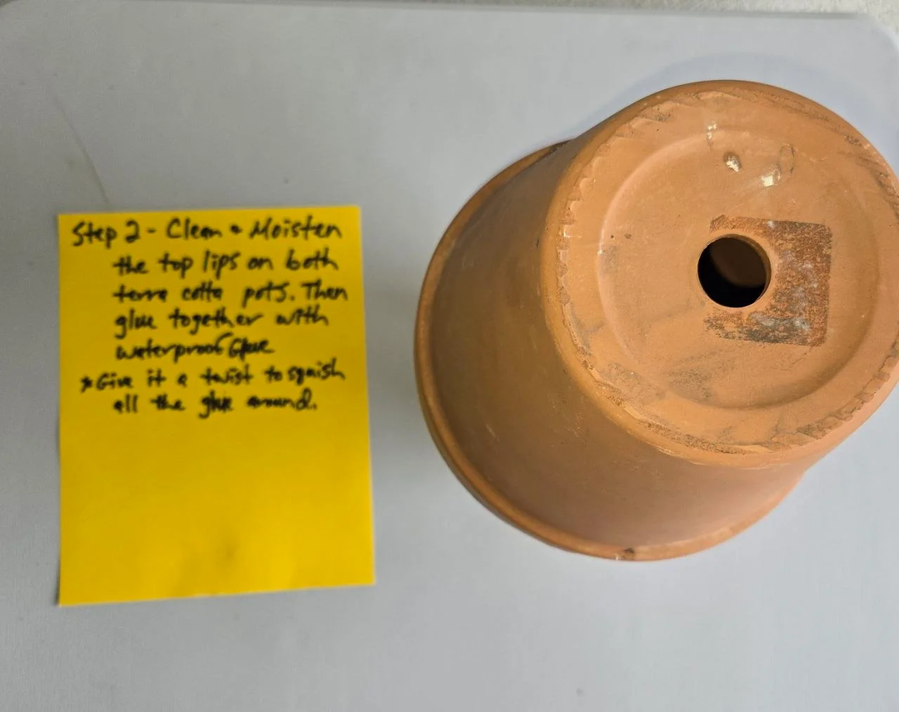
Add the glue
Apply waterproof glue around the rim so the two pots can be joined together.
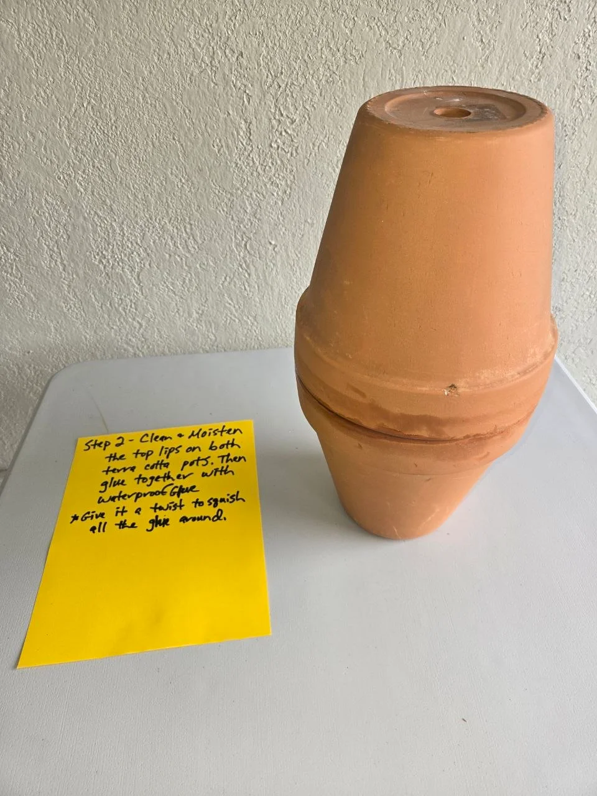
Join the pots
Press the pots together and let the glue cure so you end up with one buried water reservoir.
Install the olla
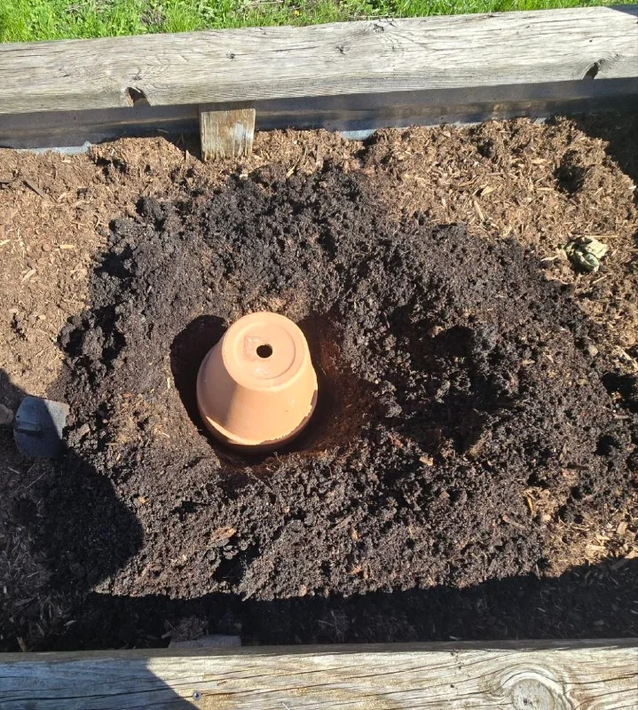
Dig the hole
Dig a hole deep enough to bury about three-quarters of the olla.
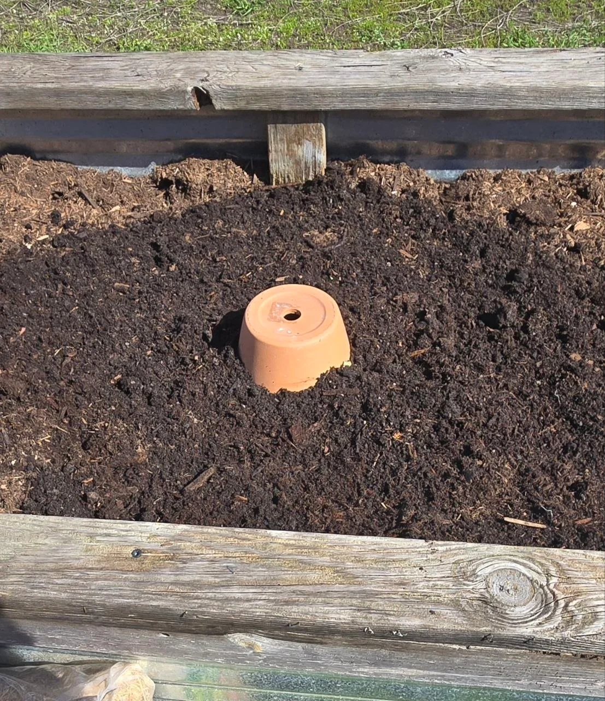
Set it in place
Set the olla in the hole and backfill around it, leaving about 2 to 3 inches above the soil.
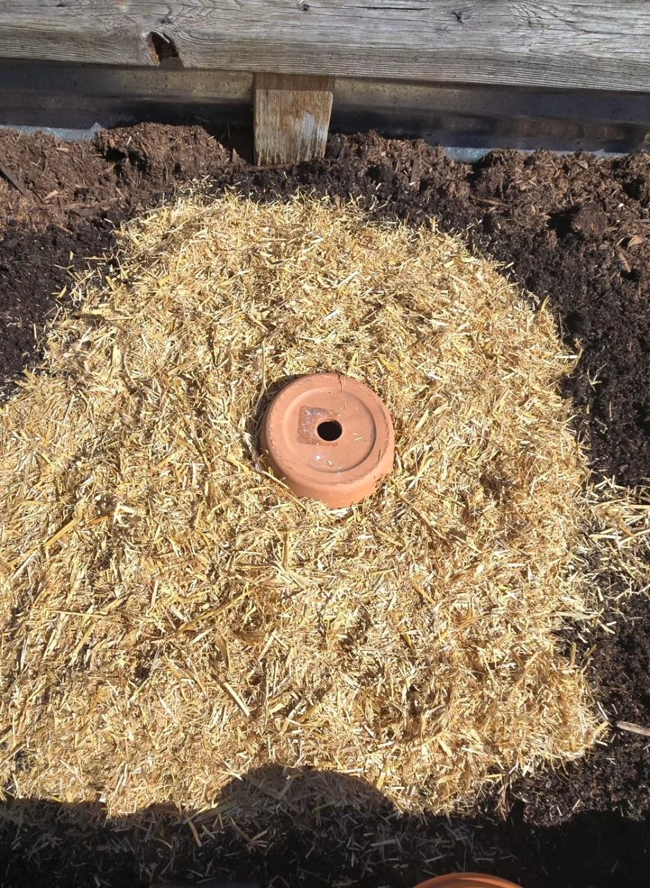
Mulch around it
Place straw or mulch around the buried olla.
Fill with water
Fill the olla with water.
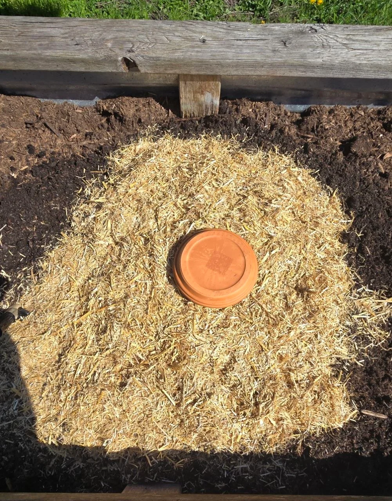
Cover it
Place a lid on top.
The simple 1-pot version
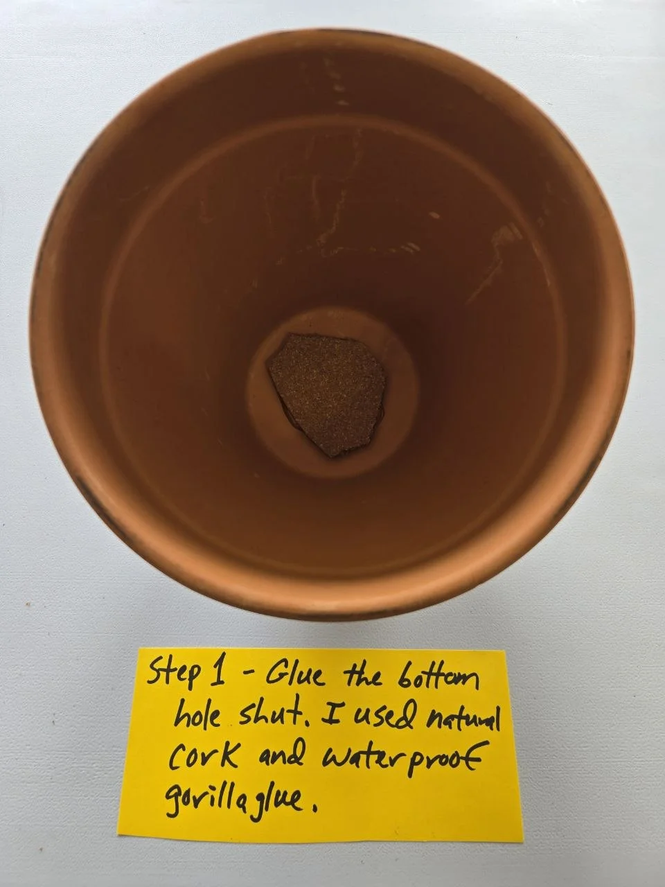
Build it
It really is as easy as burying 1 unglazed terra cotta pot. Make sure the pot is unglazed, because glazed pots will not let water seep through properly.
First, glue the hole in the bottom shut. I used a piece of cork and waterproof Gorilla Glue, but you could also use a piece of tile or a flat rock as long as it seals well.
Bury, water, and cover
Then bury the pot, leaving about 1 to 2 inches sticking out above the dirt. Fill it with water and cover it. I used a planter base for a lid.
Keeping it covered helps reduce evaporation, keep debris out, and help stop mosquitoes from breeding inside the pot.
To help retain moisture even more, mulch around the whole planter right up to the top of the pot.
One important thing: water your bed completely first, then fill the pot. The olla works best as a steady moisture helper, not as the only first watering for bone-dry soil.
You cannot really overwater with the pot itself, because the water will not seep out unless the soil around it is dry and the plants need a drink.
This simple setup will usually water about a 1 to 2 foot radius around the olla, depending on the soil and conditions. It works especially well in raised beds, vegetable gardens, smaller spaces, and around thirsty plants nearby.
Just refill the pot as needed. In colder climates, it is smart to drain or remove it before hard freezing weather if cracking is a risk.
1-pot olla do's and don'ts
Do
- Keep them covered: use lids to stop mosquito breeding, reduce evaporation, and keep debris out.
- Pack soil carefully: make sure the soil is snug against the pot so there are no big air gaps.
- Refill regularly: check and fill ollas at least once or twice a week, or when they get about halfway empty.
- Use them in containers and raised beds: they are especially good there because they deliver slow steady moisture.
- Mulch around them: mulch helps cut surface evaporation even more.
- Try them with thirsty plants: tomatoes, squash, melons, and other deeper-rooted or sprawling plants can do really well with ollas.
Don't
- Let them freeze full of water: drain or remove them in winter so the terracotta does not crack.
- Overwater around them at the same time: let the soil pull moisture naturally instead of turning the whole bed soggy.
- Use glazed pots: you want unglazed porous terracotta so the water can seep out slowly.
- Leave them open: an uncovered olla can become a mosquito spot and collect debris.
- Place them too far from roots: keep placement close enough to matter, often around 2 to 3 feet depending on the crop.
- Fill them with dirty water: muddy debris-filled water can clog the clay pores over time.
Why this is worth trying
Ollas are simple, but they solve a real problem. Instead of watering the whole surface every day, they slowly move moisture down into the root zone where it is actually useful. That can help raised beds stay more evenly watered and may help during hot dry stretches too.
More importantly for us, this is one of those backyard fixes that came directly out of getting something wrong, then trying again. I do not know yet if these will solve the problem completely, but they are practical, low-tech, and worth testing. We will find out by living with them.
If you like low-tech garden helpers, this also pairs nicely with our simple worm tube idea for feeding the soil.